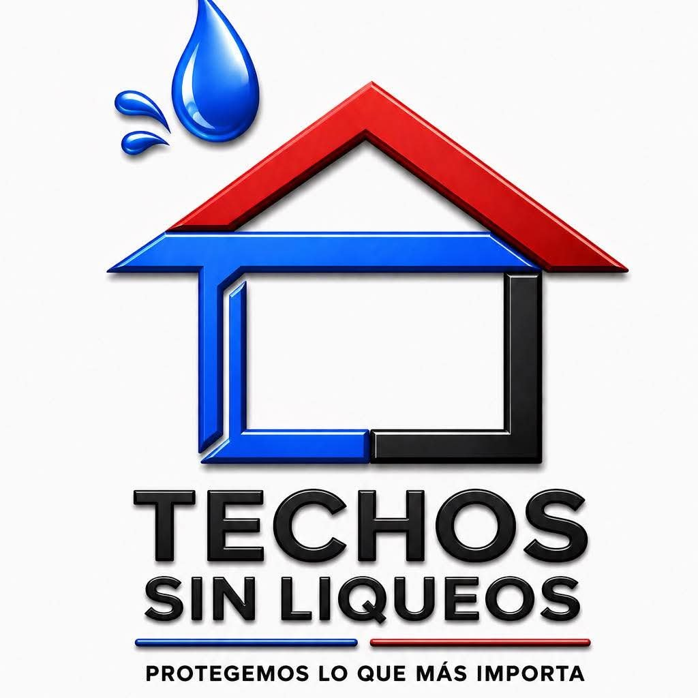
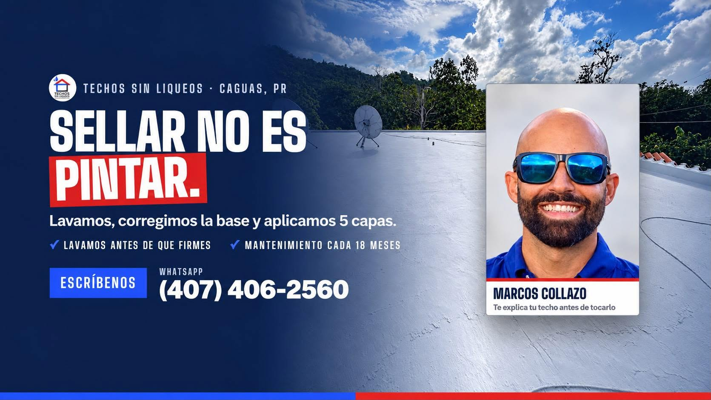

Techos Sin LiqueosProtegemos tu hogar con un sellado de techos en 5 capas. Desde Caguas, Puerto Rico — siempre abierto.

Marcos Collazo — te explica tu techo antes de tocarlo. Lavamos, corregimos la base y aplicamos 5 capas, con contrato y garantía por escrito.
Anuncios y trabajos de Techos Sin Liqueos, pasando hacia el lado.
Soluciones para que tu techo no vuelva a liquear.
Así trabaja Techos Sin Liqueos, paso a paso.
Lavamos tu techo antes de que firmes, para que veas su condición real.
Se corrige la base donde hace falta, antes de sellar.
Sellado completo en 5 capas. Sellar no es pintar.
Todo por escrito: contrato y garantía.
Mantenimiento programado cada 18 meses para que el sellado dure.
Desde Caguas, Puerto Rico. Escríbenos por WhatsApp y coordinamos tu visita.
Lavado, corrección de la base y 5 capas de sellado, con contrato y garantía por escrito.
En Caguas, Puerto Rico, y siempre abiertos. Escríbenos por WhatsApp con tu pueblo y coordinamos.
Sí: contrato y garantía por escrito, y mantenimiento cada 18 meses.
Completa el formulario y se abrirá WhatsApp con tu mensaje listo para enviar a Techos Sin Liqueos.